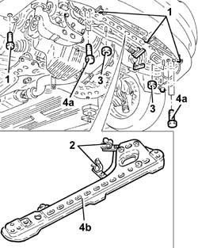
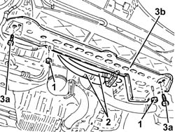

1088B32 engine cooling radiator support beam - r r
- Path
- Procedures > 10 ENGINE > 1088 ENGINE COOLING > 1088B ENGINE COOLING RADIATOR > 1088B32 engine cooling radiator support beam - r r
- Kind
- repair procedure (removal / refitting; the operation number is the code)
- Applies to
- engines: 1.9 JTD 8v , 2.4 JTD 10v, 2.4 JTD 20v; all production periods
- Interactive page
- https://sloeber94.github.io/elrnDB-a156/en/#/3237851
Applies to: engines: 1.9 JTD 8v , 2.4 JTD 10v; all production periods
 Removing
Removing
 Refitting
RefittingPosition the vehicle on the lift.
Raise the car.
1. Undo the front bumper lower bolts.
2. Release the air conditioning system pipes from the bands on the engine cooling radiator supporting crossmember.
3. Undo the nuts fixing the power assisted steering coil to the engine cooling radiator supporting crossmember.
4. Undo the bolts (4a) and remove the engine cooling radiator supporting crossmember (4b).

Applies to: engines: 1.9 JTD 8v , 2.4 JTD 10v; all production periods
Refitting
RemovingFit the engine cooling radiator supporting crossmember and fix it using the bolts.
Tighten the nuts fixing the power assisted steering coil to the engine cooling radiator supporting crossmember.
Fix the air conditioning system pipe to the engine cooling radiator supporting crossmeber using the bands.
Tighten the front bumper lower bolts.
Lower the vehicle.
Remove the vehicle from the ramp.
Applies to: engines: 2.4 JTD 20v; all production periods
Removing
RefittingPosition the vehicle on the ramp.
Proceed with removal 7055B54 under-engine guard - r r .
Proceed with removal 7055A43 central front grille - r r .
Proceed with removal 7055A41 RIGHT FRONT GRILLE - R.R. .
Proceed with removal 7210E10 R.R. FRONT BUMPER .
1. Undo the nuts fixing the power steering system pipes mounting brackets.
2. Release the air conditioning pipes from the band on the crossmember.
3. Undo the bolts (3a) and remove the engine cooling radiator supporting crossmember (3b).

Applies to: engines: 2.4 JTD 20v; all production periods
Refitting
RemovingPlace the engine cooling radiator crossmember back in its housing and fix it using the bolts.
Fix the air conditioning system pipes with the band on the crossmember.
Tighten the nuts securing the power steering pipes mounting brackets.
Proceed with refitting 7210E10 R.R. FRONT BUMPER .
Proceed with refitting 7055A41 RIGHT FRONT GRILLE - R.R. .
Proceed with refitting 7055A43 central front grille - r r .
Proceed with refitting 7055B54 under-engine guard - r r .
Remove the car from the ramps.